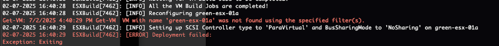

Release Notes
This page documents the key features, enhancements, and capabilities available in Holodeck releases.
Holodeck 9.0 – Initial Release
Release Date: June 2025
Supported VCF Versions: VCF 9.0, VCF 5.2.x
Minimum ESX Version: 8.0 U3
What's New
- Support for both VCF 9.0 and VCF 5.2 deployments from a single toolkit
- vSAN ESA and OSA deployment options
- New VVF deployment mode (VMware vSphere Foundation)
- Proxy support for online/offline depot workflows
- Enhanced PowerShell cmdlets with modular support:
New-HoloDeckConfig,New-HoloDeckInstance,Start-HoloDeckInstance,Stop-HoloDeckInstance- Option to deploy greenfield VCF environments with provision-only mode
Environment Breakdown
Each Holodeck environment includes a pre-configured set of virtual infrastructure components.
- A Holorouter appliance (Photon OS based) with:
- DNS, DHCP, NTP, Proxy
- Dynamic routing (BGP), L2 switching
- Optional webtop (browser-based desktop)
- Support for VCF and VVF deployments
- Supports vSAN ESA and vSAN OSA
- Online and offline depot support for the VCF Installer
- Management Domain includes:
- 4 nested ESX hosts as vSAN ready nodes
- VCF Installer, vCenter, NSX, VCF Operations, SDDC Manager
- Optional: VCF Automation
- Optional Workload Domain:
- 3 nested ESX hosts
- vCenter, NSX, optional Supervisor Cluster
- Optional NSX Edge Clusters in management and/or workload domains
- Deploy additional 3-node vSphere clusters within management domain
- Provision-only mode to deploy just the installer and hosts
- Custom CIDR support for flexible networking
- A Holorouter appliance (Photon OS based) with:
- DNS, DHCP, NTP, Proxy
- Dynamic routing (BGP), L2 switching
- Optional webtop (browser-based desktop)
- Supports VCF deployment only
- vSAN OSA support
- Management Domain includes:
- 4 nested ESX hosts as vSAN ready nodes
- Cloud Builder, vCenter, NSX, SDDC Manager
- Optional Workload Domain:
- 3 nested ESX hosts
- vCenter and NSX
- Optional NSX Edge Clusters in management and/or workload domains
- Deploy additional 3-node vSphere clusters within management domain
- Custom CIDR support for flexible networking
Known Issues
- Hosts with memory tiering enabled may cause instability in nested workloads
- vSAN ESA may consume more storage than expected due to nested deduplication/compression behavior
Online Depot Check Failure: ConvertFrom-Json: Cannot bind argument to parameter 'InputObject' because it is null.
If you’re using the online depot route for VCF Installer configuration, there is a known issue where the final validation step fails due to a mismatch between the API response format expected by Holodeck and the actual output from VCF Installer.
27-06-2025 00:43:32 SddcMgmtDomain[63248]: [INFO] Setting up depot for VCF Installer
27-06-2025 00:43:32 SddcMgmtDomain[63248]: [INFO] Depot Type selected: online
27-06-2025 00:43:34 SddcMgmtDomain[63248]: [ERROR] Depot connection failed.
ConvertFrom-Json: Cannot bind argument to parameter 'InputObject' because it is null.
Exception: Exiting
Workaround
- Login to the VCF Installer UI via Webtop
(typically athttps://10.1.10.250unless a custom CIDR was used) - Check if the depot is already configured successfully
- If confirmed, navigate back to PowerShell and run:
- Find and manually update the section:
- Change
"Status": "InProgress"to"Status": "Success"to unblock the process. - Run
New-HoloDeckInstancecommand again to pick up from where it failed.
Track this issue and future fix here: GitHub Issue #1
Why did VM deployment fail with 'VM with name not found using the specified filter(s)'?

This issue can occur if the portgroup used by vCenter for VM placement is an uplink portgroup.Uplink portgroups are static and do not have available ports for VM deployment, which causes Holodeck to fail during the VM provisioning step.
Symptoms:
- Error: VM with name 'green-esx-01a' was not found using the specified filter(s)
- Deployment halts with: [ERROR] Deployment failed
When does this happen? - Environments with multiple vSphere Distributed Switches (vDS) configured in the same vCenter. - The VM placement logic accidentally targets an uplink portgroup.
Workaround: - Create a test portgroup in the same vDS with default settings (non-uplink, ephemeral or static binding). - Retry the Holodeck deployment process.
Track this issue and future fix here: GitHub Issue #10
Users lose Webtop, SSH and ping access to Holorouter on rebooting Holorouter
Reason: Some of the iptables rules on HoloRouter aren't persistent across reboots
Impacted Services: SSH, Ping, and Webtop; None of the other Holodeck infrastructure services should have any impact due to this bug.
Workaround:
-
If you haven't rebooted the HoloRouter yet but are planning to, run the following command before rebooting it -
-
If you've already rebooted the HoloRouter, since you don't have SSH access, log into the HoloRouter console in the vCenter/ESX host and run the following commands -
iptables -D INPUT -i eth0 -j DROP
iptables -A INPUT -i lo -j ACCEPT
iptables -A INPUT -m conntrack --ctstate RELATED,ESTABLISHED -j ACCEPT
iptables -A INPUT -p tcp -m tcp --dport 22 -j ACCEPT
iptables -A INPUT -i eth0 -p icmp -j ACCEPT
iptables-A INPUT -i eth0 -p tcp -m tcp --dport 22 -j ACCEPT
iptables-A INPUT -i eth0 -p tcp -m tcp --dport 30000 -j ACCEPT
iptables -A INPUT -i eth0 -j DROP
Previous Versions
Looking for Holodeck 5.2 setup guidance? Refer to the Holodeck 5.2 documentation.
Reporting Issues
To raise issues, feature requests, or provide feedback, please visit the Holodeck GitHub repository.